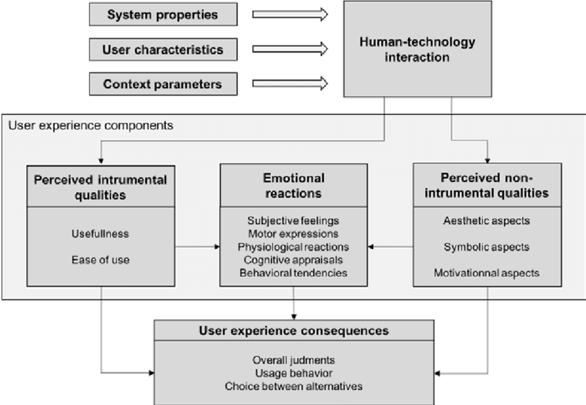

e-Portfolio activity
Question: As a Project Manager, what might be your response to manage the emotional reactions of a customer? You should use at least three academic papers to support your response and write a minimum of 300 words as your response.
Answer
“Design is really an act of communication, which means having a deep understanding of the person with whom the designer is communicating.” (Donald A.)
As humans, we often go through a wide spectrum of emotions every day. From Happiness to sadness, to feeling frustrated to feeling joyful, likewise every action we perform is motivated by a different emotion, and it varies from person to person. Therefore, when designing a specific product, it is indeed crucial to pay attention to the emotional effect on the users. When it comes to managing this emotional reaction of a user or a customer, it is not always what is usable is likable; this can be highlighted through the following statement.
“People are seeking out products that are not just simple to use but a joy to use” (Bruce Claxton)
Therefore, it is far more evident that, when designing a specific product, it is crucial to evaluate the product with overall judgements, usage behavior and choice between alternatives. Because at the end of the day it all depends on the behavioral use of a product. It must appear well, function well, and feel well. It is all about experiencing enjoyment from a product's usefulness.
The idea of behavioral design centers on how a system or structure, as seen by the users, satisfies their wants and necessities. The key to a good behavioral design works like a lock and a key. Here, the product is the key, and customers and their behaviors are the lock. When the two are in perfect harmony, everything is in perfect order. (Philips, 2017)
A product won't last long if its design does not match user behavior. As for an example, according to a recent study, 72 hours (or around 3 days) after installing an app, 77% out of those users never use it again. The most popular apps are those that, as a result of effective behavioral design, people use frequently and find it impossible to live without. (Philips, 2017)
Therefore, when considering all the above-mentioned information and statements it can be concluded that, Delivering the optimal customer experience, which will result in competitive advantage and growth, depends heavily on translating them into effective emotive design that is elegant, attractive, and truly distinctive.
References:
Philips, M. (2017). Design for Emotion to Increase User Engagement. [online] Toptal Design Blog. Available at: https://www.toptal.com/designers/product-design/design-for-emotion-to-increase-user-engagement.
Minge, M. and Thüring, M. (2018b). Hedonic and pragmatic halo effects at early stages of User Experience. International Journal of Human-Computer Studies, 109, pp.13–25. doi:10.1016/j.ijhcs.2017.07.007.